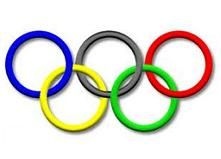

Es donde vivo
El mejor sitio turístico de todo el baixomiño
Lugares a visitar en Tui
Un restaurante muy típico de Tui,que tiene muchos años es el Restaurante "El Molino"

Si
No
Volver a la página principal
 O Rosal
Oia
Gondomar
Salceda de Caselas
O Rosal
Oia
Gondomar
Salceda de Caselas